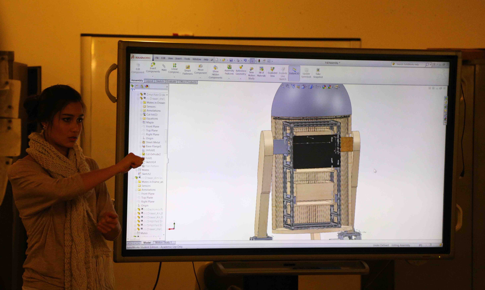
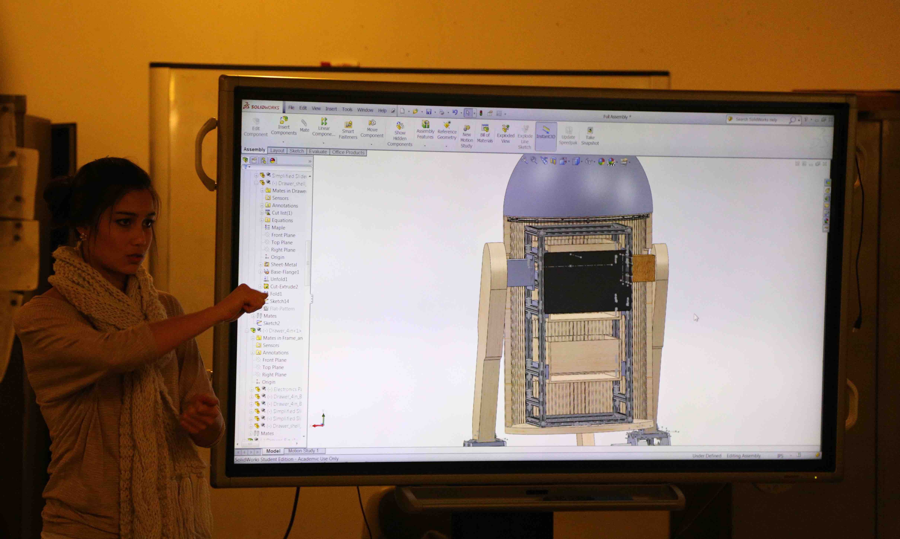

Head
The team is working on integrating the nerf blaster, a periscope, a lens aperture winking mechanism, and the head structure. We are also designing the new head and additional internal and external features on the R2 robot.
Precision Arm
We are designing a high precision robotic arm for use on R2. This arm has 5 degrees of freedom and will allow R2 to perform various tasks including waving hello, opening a door, and picking up a pen.
Nerf Gun
Our goal is to create an automatic nerf gun placed inside R2D2’s body with two degrees of freedom. It is controlled by an arduino and integrated with facial recognition.
Locomotion
We are designing the new head and additional internal and external features on the R2 robot. This includes a head nodding mechanism and features like the nerf blaster attachment in R2's drawer.
Path Planning
The team is working on enabling R2 to traverse across different terrains and avoid obstacles, through the development of algorithms and the use of sensors.
Facial Recognition
The goal is to recognize the faces of Cornell Cup members and then check in for attendance. We are currently working on having faster transmission between the programs, creating a better facial recognition algorithm, and testing for Google Docs auto-fill API for check-in.
Strong Arm
We are designing a durable robotic arm intended for performing operations requiring more strength for R2. This arm will be used for more higher-force operations, such as holding open doors and picking up heavy objects.
Object Detection
The goal of the objection detection project is to be able to classify and locate an object from an image capture to guide R2 around the lab. Our eventual goal is to create a pipeline that can train a model to recognize objects in the lab given a set of training data.
Speech & Sentiment Analysis
The purpose of this project is to make R2 able to react to sentiment in the user’s speech. R2 should react either negatively, by playing a sad noise on its speaker, or positively, by playing a happy sound on its speaker, based on the sentiment of the user’s speech.
 
